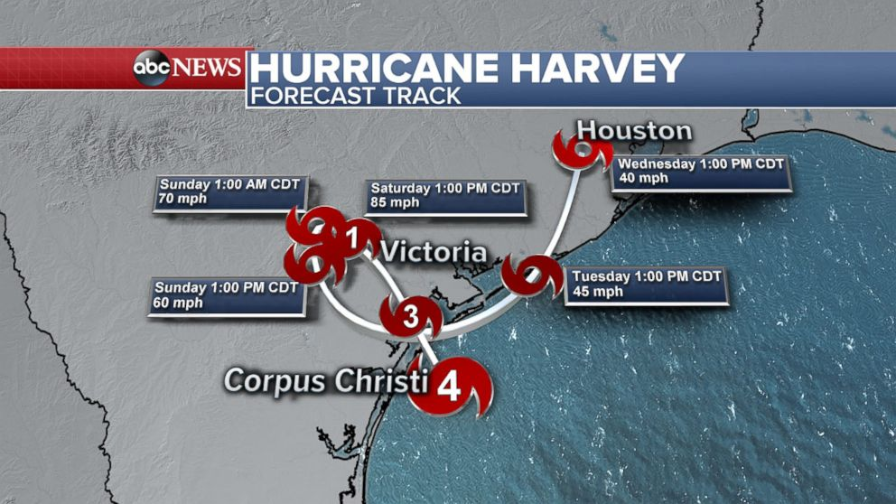

September 19,2017
The hurricane news
Several hurricanes have hit across the United States this season. To date,
we have been struck by the following hurricanes:
- Hurricane Harvey- slammed Texas with the prime location in and around Houstonbefore making way to Southeast coast region.

- Hurricane Irma- destroying parts of Florida with high winds and rain.

- Hurricane Jose- headed to the northeast region of US from Long Island, New York up to Boston, Massachussets.

- Hurricane Maria- Aiming for Puerto Rico and the Virgin Islands.

These hurricanes are obviously on mother nature's bad side unfortunately and have had several things in common; they have caused destruction to land and its people in several ways as listed below:
- Power outages- no electricity, water, internet, phones
- Homes completely destroyed and leaving residents with no place
to sleep as well as lives lost
- The flooding itself has led to people without food and water